Teaching and Equipping
The Last Few Months
Short Training in Steung Treng
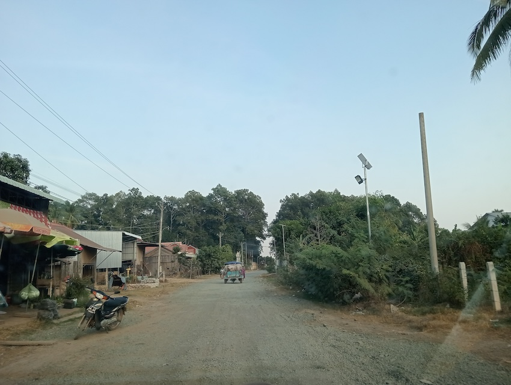 On the road to Steung TrengLast February we had the opportunity to go visit Steung Treng, the province right next to Ratanakiri. Ryan was invited to teach on Ezra-Nehemiah, and Esther (right now they’re doing Old Testament survey).
It is similar to the school in Ratanakiri (originally purposed for pastors, but they allow women and other interested persons to join) just at an earlier stage. The size of the training is about the same too (60-65 students or so), but it’s different in that they do it once a month for one day rather than twice a year for 4-5 days. Perhaps this might turn into something that we are able to participate in regularly when we move up to Ratanakiri next year as well - right now it’s a bit far but it will be much closer to us when we go to Ratanakiri in 2025.
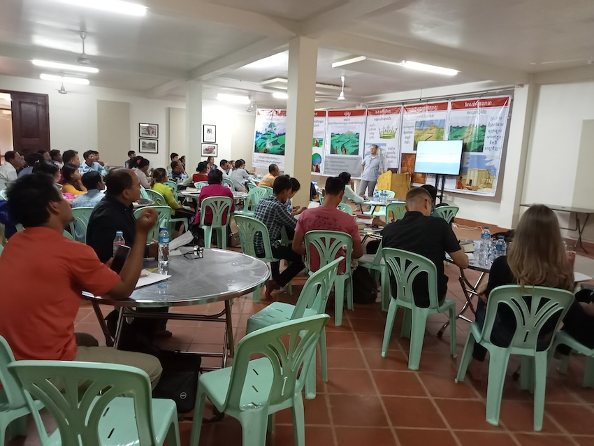 The group that joined for this trainingAs an aside, please thank the Lord with us, for the generosity of those who gave so generously that we could have a car. We haven’t had a need for it for our first five years in Cambodia, but now with four kids it’s been a great blessing.
This is especially helpful for getting around to other provinces in Cambodia, for example for the training this last February to Steung Treng and then for this upcoming training in Banlung.
Teaching at PPBS
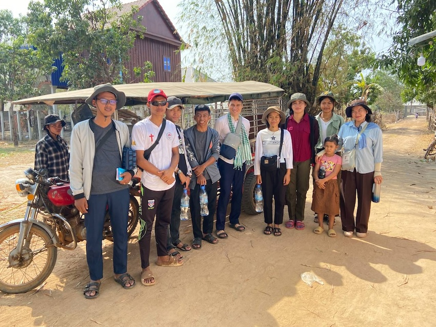 Ryan’s Small Group at PPBS Ministry at PPBS continues. Ryan is still teaching Beginning Hebrew and the book of Isaiah. Everytime we read through Isaiah, we always see more and more of God’s glory in salvation as He works out His plan of Salvation through His Servant, the Messiah.
Visiting Kampong Chhnang
One special event that came up in the last few weeks was a short Field Ministry trip to Kampong Chhnang province. It was a great time of learning and hands-on discipleship as we talked about ministry, sharing the gospel, and what God’s heart is for Christ’s Bride, the Church.
One particular encouragement came when it came time to do visitation and gospel sharing among the neighbors. From the Pastor’s experience, the neighborhood where students were going is particularly resistant to the gospel, and he even recommended that it might be best just to go and talk and mention we’re Christians, but not share the gospel outright. For many of us - admittedly, too often, myself included! - this would be enough of an excuse to take the easy road of least resistance and do just that. However, we talked and prayed about it the night before the students were going to go out, in particular discussing Acts 5 and the example of the Apostles, in how they demonstrate in their actions the importance of the gospel which compels us to share it with others. When the Jewish leaders forbade them from preaching the gospel of Christ, Peter and the apostles answered:
“We must obey God rather than men. The God of our fathers raised Jesus, whom you killed by hanging him on a tree. God exalted him at his right hand as Leader and Savior, to give repentance to Israel and forgiveness of sins. And we are witnesses to these things, and so is the Holy Spirit, whom God has given to those who obey him.” (Acts 5:29–32)
It’s striking how they don’t just refuse to obey, they even go on and preach the gospel right there to the High Priest and the Sanhedrin!
As we were talking, one student in particular took a hard stand - for him, his conscience wouldn’t allow him to just go and visit the village without sharing the gospel as well. We knew clearly that no one there had ever heard the gospel before, and that this might be one of the few chances they ever would. Other students expressed agreement, and we all prayed together for help and wisdom.
When they went out the next morning, the students were excited to share the gospel. In God’s providence, it went forward without any incident, and many heard the Gospel of Jesus Christ that day for the first time. Pray that the seeds planted would bear fruit in many lives. Pray also for these students, whose convictions are being shaped now, and that they would continue to walk in the Spirit and not quench His guidance.
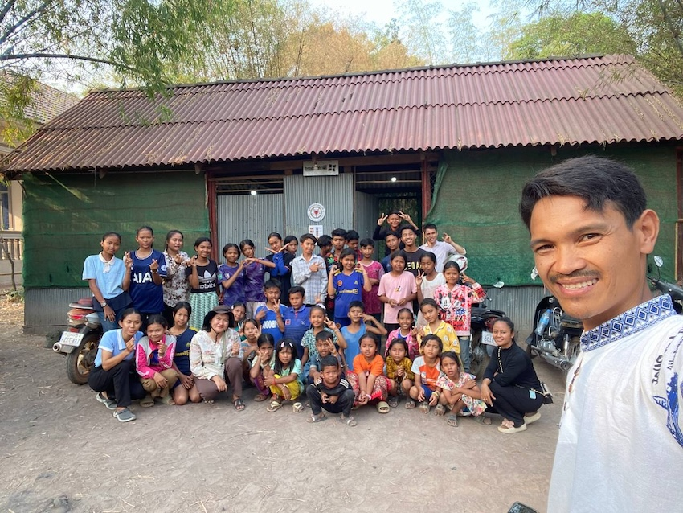 Children’s outreach with Pastor Dara
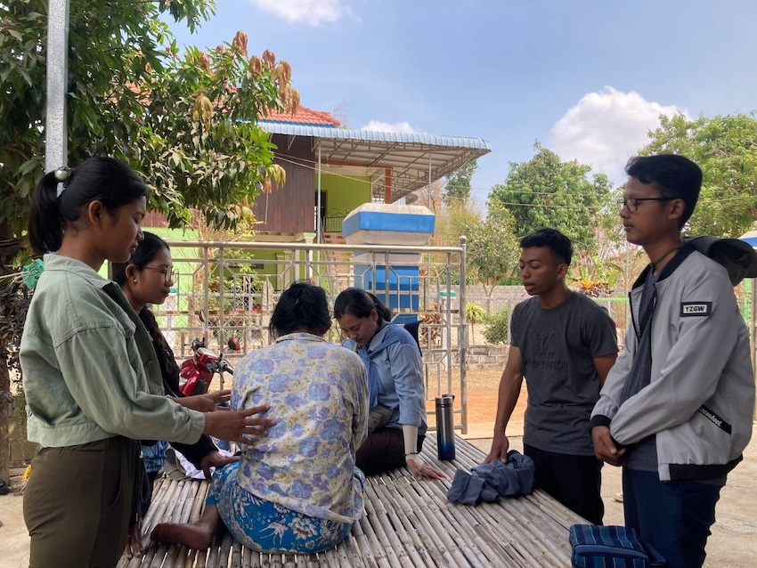 The students visiting families in the neighborhood 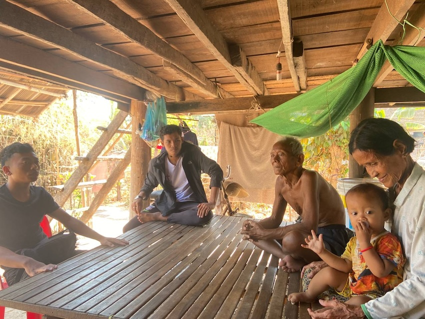 Neighborhood visits
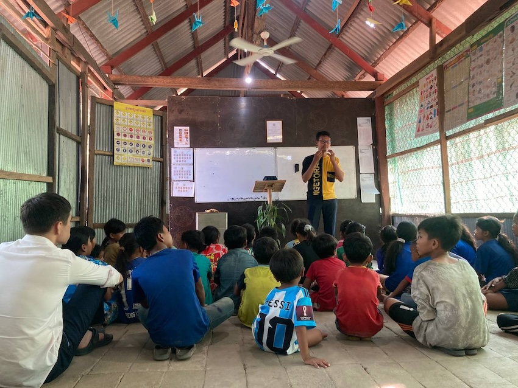 One of the students teaching
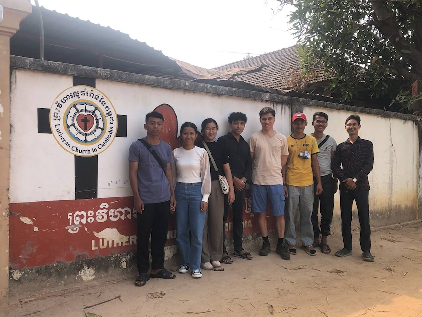 With the pastor there, Pastor Dara, who is a PPBS alumnus
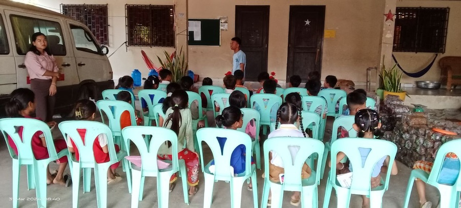 Set up at a church they visited on the trip
Upcoming Training in Banlung on the Family
On April 16th, I (Ryan) will be going up for the last training in Ratanakiri before we move there Lord willing next year in 2025. This one will be particularly special, because it is focusing on the family.
Early on in my time in Cambodia, I was a little bit disappointed on how much training and conferences there were about “application”, when were fundamental issues such as the nature of the gospel, God’s overall plan for redemptive history, and other fundamental biblical issues were still missing. Application of course is very necessary - without it we are just “hearing” without “doing”. The problem is just when trainings focus just on the “what” (ie methods) to the exclusion of the “why” and the “how” (ie, the gospel core, our new hearts created anew in the New Covenant, by the power of the Holy Spirit, etc).
However, when done properly, discussing the family is a very strategic opportunity for pastors and church members to really think about how the gospel changes everything in our lives. This kind of topic literally gets “in your kitchen”, forcing all of us to really ask ourselves if we are living in step with the gospel.
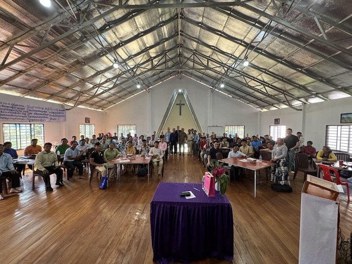 It is a very strategic topic as well for helping local churches - it is no accident that the apostle Paul mentions how one cannot possibly know how to manage the household of God without knowing how to manage his own household first (cf. 1 Tim 3). Particularly as the Cambodian Church is transitioning from being a first generation to a second generation church, this topic is particularly relevant in order to safeguard the future of churches here.
Please pray that there would not just be families with changed habits, but most of all that these changed habits would come about from changed hearts and renewed minds.
One prayer request in particular: Pray for lasting fruit and for many of these pastors and teachers as they head back into their respective churches and ministries.
The book they will be using for this Pastor school session (although a bit edited)
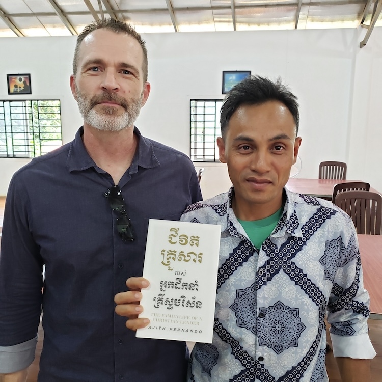 This was translated into Khmer by the ACTION Cambodia translation team!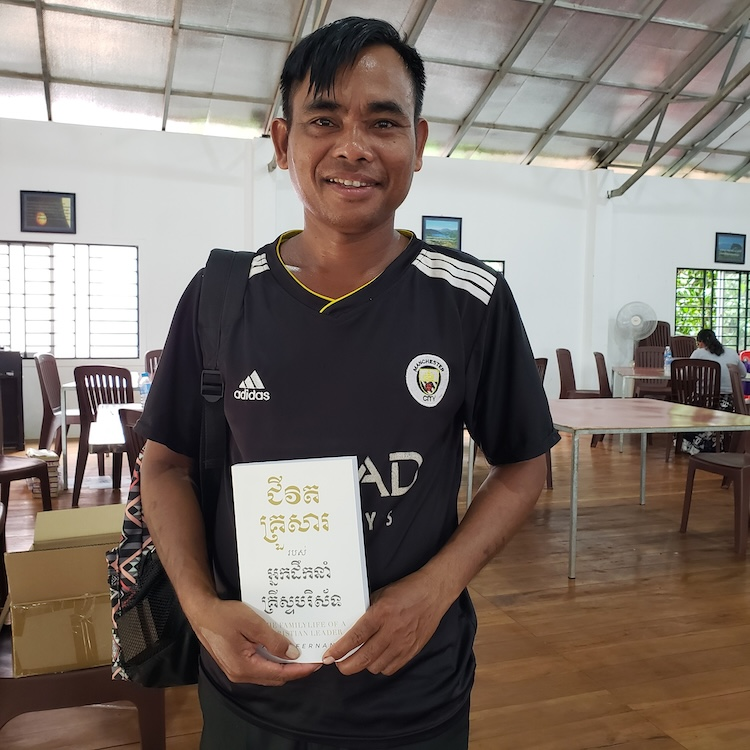 These were brought to the pastors and attendees of the previous Pastor’s school in Ratanakiri
Prayer Requests
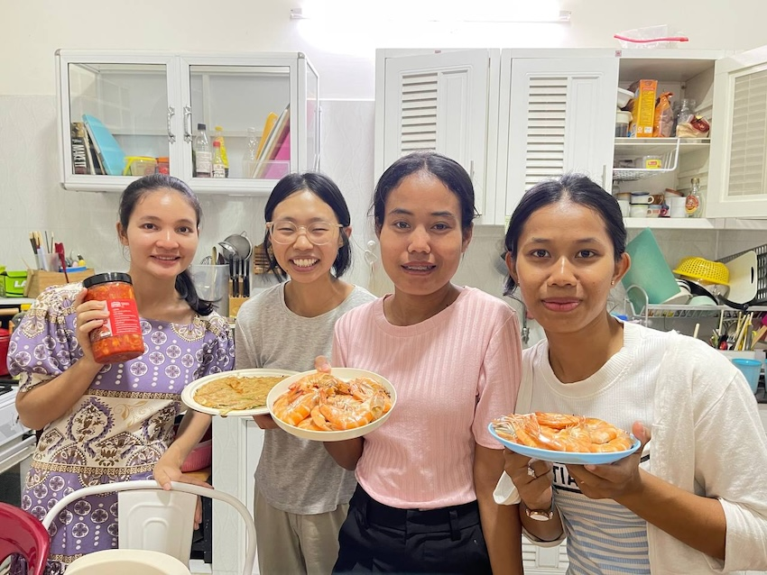 Students from PPBS came over for dinner together Besides the above prayer requests, please pray also for the following situations:
- To finish strong at the Phnom Penh Bible School. Particularly that I would take advantage of the opportunities given to clearly articulate how the meaning of the gospel in the Old and New Testaments, and how it shapes how we do ministry in the church and in our lives today.
- For our personal holiness, that we would be filled with the Holy Spirit and walk in Him more and more everyday.
- For our children, that they’d be protected from temptation and most of all for their regeneration.
- For wisdom on our part, that we would raise our children in the training and admonition of the Lord.
For His glory,
Ryan and Rebekah